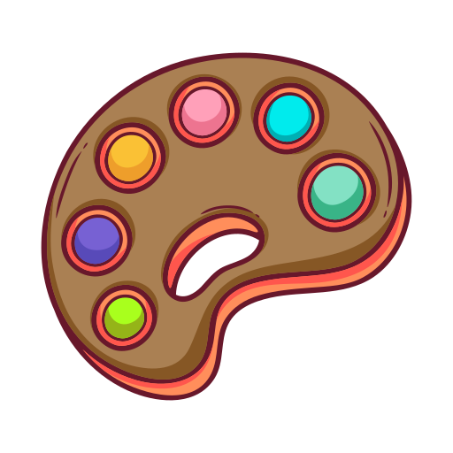

.png)
.png)
.png)
.png)
ABOUT ME
Olá! Que bom ter você por aqui. Deixe eu me apresentar: Me chamo Aline dos Santos Pinhelli, natural de Curitiba/PR, atualmente moro em São José dos Pinhais/PR, tenho 32 anos, casada há 15 anos e tenho 2 filhos adolescentes. Sou uma profissional dedicada e entusiasta, já atuei em várias áreas da indústria, também me arrisquei no empreendedorismo e possuo muitas habilidades com culinária e artesanatos. Na busca do autoconhecimento, me descobri na carreira de programação. Estou em busca de oportunidades como analista Full Stack Júnior. Tenho paixão pelo desenvolvimento web e estou animada para expandir minhas habilidades nessa área.
-
PROGRAMAÇÃO

Tenho conhecimentos em HTML, CSS e JavaScript, bem como experiência com frameworks e bibliotecas populares, como React e Node.js. Sou capaz de desenvolver interfaces responsivas e interativas, trabalhar com APIs e realizar integrações com bancos de dados.
-
NEGOCIAÇÃO E COMUNICAÇÃO
Comunicadora hábil e comprometida em aprender e crescer, possuo talento natural para a comunicação e negociação. Expresso ideias de forma clara e concisa, valorizando a escuta ativa para entender perspectivas diversas. Consciente da importância da linguagem corporal, busco constantemente aprender e praticar técnicas que transmitam confiança e empatia.
-
ARTES
Minha paixão pelas artes me permite expressar minha criatividade de maneiras diversas. Sou capaz de criar ilustrações, pinturas, músicas e trabalhos visuais que transmitem emoções e contam histórias. Acredito que a arte é uma forma poderosa de comunicação e expressão.